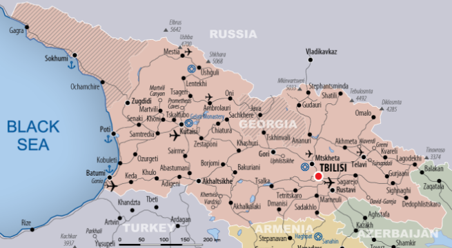
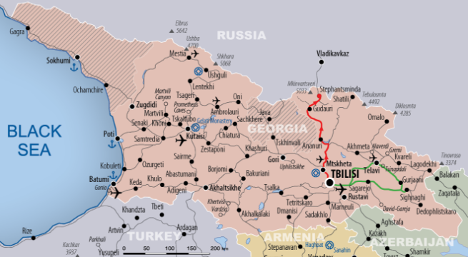
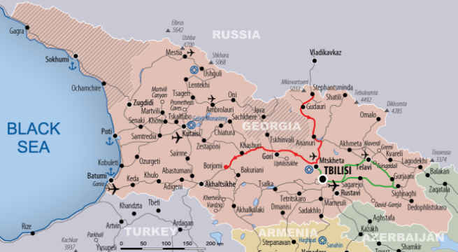
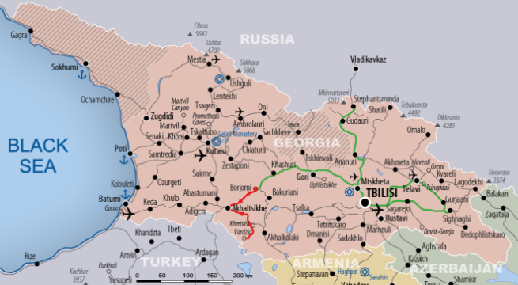

ESSENTIAL GEORGIA
Taste a flavour of the country
The journey of discovery leads us to different regions in Georgia, along the Caucasus Mountains and lowlands with fascinating landscapes and its inhabitants. The less travelled corners in the isolation of the Caucasus Mountains with turbulent histories, lifestyle and ethnological diversity, as well as ancient cave towns impresses the visitor.
-
Day 1:
Arrival in Tbilisi
-
Day 2:
Tbilisi. Visit Tbilisi, a town which conquers you with increasing fascination and lodges in your heart forever.
-
Day 3:
Tbilisi - Sighnaghi - Tsinandali - Tbilisi Kakheti region is well-known for its hardworking, good-tempered people, and mostly for its wines. Ancient Georgian traditional Qvevri winemaking is listed in Intangible Cultural Heritage Monuments by UNESCO. This excursion aims to give you Georgian wine tasting experience.
-
Day 4:
Tbilisi - Mtskheta - Stepantsminda In order to see the high peaks, roaring rivers and mountain lifestyle of Georgia’s northern borderlands we will travel to Stepantsminda via Mtskheta (UNESCO site), where we’ll visit Jvari church (6th c) and Svetitskhoveli cathedral (11th c).
-
Day 5:
Stepantsminda and its surroundings Explore Gergeti Trinity church (14th c.), which reflects the severe beauty of glaciers and austerity of local people called Mokheves. You will enjoy beautiful views of Mount Kazbek (5047 m), called by locals the bride of Khevi.
-
Day 6:
Stepantsminda - Ananuri - Borjomi Proceed to spa resort of Borjomi, famous for its mineral water with curative effects, via Ananuri architectural complex overlooking Jinvali Dum.
-
Day 7:
Borjomi - Akhaltsikhe - Vardzia - Borjomi Venture to explore the rock-hewn complex of Vardzia, via Akhaltsikhe, one of the remarkable monuments of Georgian Golden Ages.
-
Day 8:
Borjomi - Uplistiskhe - Tbilisi Explore the Uplistsikhe Cave Town, in translation The Fortress of God, first settled in the 16th - 15th cc BC.
-
Day 9:
Departure

- 
- 
-

- 
- 

BEST SEASON FOR THE TOUR BY MONTH
- Jan
- Feb
- Mar
- Apr
- May
- Jun
- Jul
- Aug
- Sep
- Oct
- Nov
- Dec
TOUR TECHNICAL CHARACTERISTICS
|
Total Touring Distance – 1380 km
|
Total driving time – 21 hours
|
|
Longest driving distance per day – 315 km
|
Longest driving time per day – 5 hours
|
|
Overnights: on Spots – 3+2+2+1 Total – 8
|
Hiking and activities total – 8,5 hours
|
|
Adopted conditions for disabled
person*
|
no
partly
fully
|
* Caucasus Travel takes special care of disabled persons, doing the best to adopt and improve conditions for disabled persons, when/where it is possible
For tour planning, pricing, reservations, management, monitoring and control of tour operations Caucasus Travel is using TourBuilderTM Travel Management Software